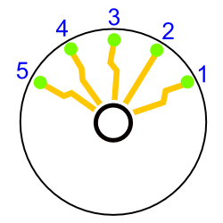
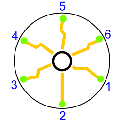
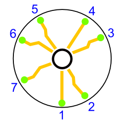
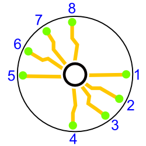

Chapter 6 ギルスの血脈A New Ally
- 1新生スタッフ/A New Ally
-
Infomation
- 制限時間 5分
- バイタル 65/80
Guide
バイタル回復注射が使えずヒールゼリーの残量も少ない状態で手術しなければならない。
バイタルを回復できない状態でギルス中毒症になると、さらにバイタル減少が加速するので極力抑えること。超執刀を使えばバイタル減少が遅くなるのでどうしても間に合わない場合に使おう。
人工膜へのヒールゼリーの使用は最小限に抑えないとテーピングまで持たないだろう。タッチペンをチョンと押すだけでも量は充分なので、使いすぎないように注意すること。
Special Bonus
条件 スコア Miss判定無し 500 【120/150/240】秒以上残して手術終了 800 MAX CHAIN 【40/65/85】以上 400 全ての傷口を人工膜で塞ぐ 300 Operation Rank
ランク スコア C ～4199 B 4200～4899 A 4900～5899 S 5900～6299 XS 6300～ for XS
時間が1分しかない。ポイントはドレーンで2箇所一気に吸うこと。そして2箇所一気に処置すること。一切の無駄を省けば超執刀無しでも1分以内に終わるのでがんばろう。
- 3恐怖は無差別に/Widespread Fear
-
Infomation
- 制限時間 5分
- バイタル 80/99
Guide
再びトリーティ。途中から黒色の血清が加わる。6回血清の投与に成功すれば除去完了となる。
Special Bonus
条件 スコア Miss判定無し 300 【120/150/180】秒以上残して手術終了 700 MAX CHAIN 【20/30/40】以上 600 毒憩室の発生個数が【3/2/1】個以下 400 Operation Rank
ランク スコア C ～7099 B 7100～7899 A 7900～8199 S 8200～8499 XS 8500～ for XS
- 4隠れ家/Backfire
-
Infomation
- 制限時間 5分
- バイタル 80/99
Guide
外傷の処置と骨折の処置だが暗闇で患部を見ることができず、ペンライトで部分的に照らして手術することになる。
骨片を拾う際には揺れが生じてしまう。揺れている最中にピンセットで何か掴んでいるとミスになってしまうので、アンジュの警告がきたら素直にピンセットはやめよう。揺れていてもペンライトは使用できる。
Special Bonus
条件 スコア Miss判定無し 300 【120/150/240】秒以上残して手術終了 700 MAX CHAIN 【25/30/35】以上 600 Cool判定【5/7/9】回以上取得 400 Operation Rank
ランク スコア C ～3199 B 3200～4199 A 4200～5199 S 5200～5499 XS 5500～ for XS
- 6扉/Improvising
-
Infomation
- 制限時間 5分
Guide
光っているピンセットに触れると即手術失敗となる。また、抜いている途中のピンが光ってしまっても同様なので、隣接するピンにはなるべく手をださないようにしよう。一番安全なのは、光り終わったピンから抜くことだ。これなら抜いている間に光ることも無い。
ピンの光る間隔はピンを抜けば抜くほど短くなる。初期状態では5回点滅する程度だが、残り1本になると1～2回点滅するほどの短さになるので気をつけよう。
タッチペンの照準がズレているとミスが多発するので、ニンテンドーDSのメインメニューから照準調整を行っておこう。
ピン配置図
数字の順番通りにピンが光る。既にピンが抜けていると飛ばして光る。光る順番が1周すると少しの間一切ピンが光らなくなり、その後再び1番のピンから光りだす。
1個目のロック

2個目のロック

3個目のロック

4個目のロック

Special Bonus
条件 スコア MAX CHAIN 【20/25/30】以上 600 Cool判定【6/7/8】回以上取得 900 【90/120/150】秒以上残して手術終了 500 Operation Rank
ランク スコア C ～5499 B 5500～6599 A 6600～7199 S 7200～7599 XS 7600～ for XS
- 7血の悲劇/Tragedy
-
Infomation
- 制限時間 10分
- バイタル 70/80、70/80、70/80
Guide
一人目：トリーティ
血清の色は5色となる。耐久力は5。
二人目：キリアキ
最初にキリアキが2体出現し、1体除去すると2体追加される。
マザーはタマゴ2個と一緒に出現し、ダメージを与えるたびにタマゴ3個→タマゴ3個→タマゴ3個と生み出してくる。合計4回レーザーを当てれば除去となる。
三人目：ペンプティ
耐久力は6。以前同様アンジュのコールを見るか、交互にダメージを与えれば問題無い。
前回とは違って発狂してから実際に攻撃を開始するまでかなりの時間があるので、その間にバイタルを大幅に回復しておこう。
Special Bonus
条件 スコア Miss判定無し 1000 【120/150/180】秒以上残して手術終了 500 MAX CHAIN 【80/120/140】以上 500 Operation Rank
ランク スコア C ～14999 B 15000～15999 A 16000～16499 S 16500～16999 XS 17000～ for XS
- » Chapter 7